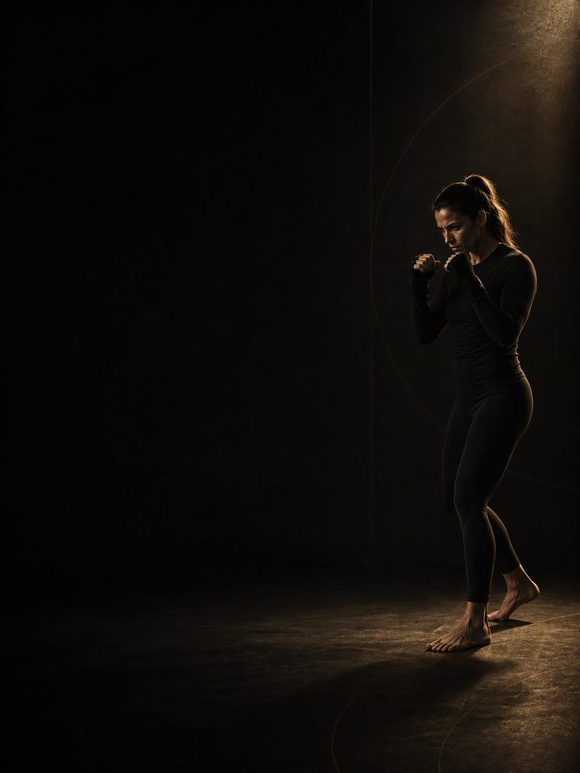

رياضات الضرب · الاستشفاء
استراحة حقيقية بعد النزال، ثم إعادة بناء متأنية للكتفين والسمانتين واليدين والرقبة التي أنهكها المعسكر.
- مناسب لـلاعبي الملاكمة والمواي تاي والفنون القتالية المختلطة بعد آخر نزال لهم
- أيام التدريبيوم قصير واحد في النادي أسبوعيًا في الأسبوعين 1–2، ثم 2–3 أيام في النادي أسبوعيًا، بلا نزال تدريبي
- مدة الجلسة53–60 دقيقة
- المعداتنادٍ متكامل، مع كرة طبية وأشرطة مطاطية وبار عقلة
- الصيغةملف PDF للهاتف، وكل تمرين مرتبط بفيديو توضيحي
المتجر يفتح قريبًا. حاليًا ينسخ زر الشراء رسالة قصيرة ويفتح إنستغرام: الصقها وتستلم الملف هناك.
لمن هذا البرنامج
للاعبي رياضات الضرب الذين انتهى نزالهم. الأسبوعان الأولان من هذه الكتلة لا يصفان شيئًا تقريبًا، ولا نزال تدريبي على الإطلاق، وهذا هو أهم جزء في البرنامج. والمقاتلون يجدون ذلك أصعب من أي رياضيين آخرين تقريبًا، لأن صالة التدريب حياة اجتماعية بقدر ما هي عمل، والرغبة في العودة يوم الاثنين قوية.
لكن المعسكر يترك ديونًا لا يسدّدها أي شيء آخر في السنة: كتف حمل وضعية الحراسة اثني عشر أسبوعًا، وسمانتان ووتر أكيلس عاشت على مقدّمة القدمين، ويدان ورسغان تلقّت آلاف الصدمات، ورقبة امتصّت كل ما أرسله النزال التدريبي إليها. وبعد الاستراحة تأتي إعادة البناء: تكرارات أعلى، وأوزان معتدلة، والجهة الأضعف تُدرَّب أولًا، وكل إصابة صغيرة تحمّلتها وأنت تقاتل تُعالَج بينما لا شيء محجوز.
إذا تعرّضت لأي ارتطام بالرأس في نزالك الأخير أو في المعسكر، فلا نزال تدريبي حتى يأذن لك مختصّ صحي، مهما شعرت أنك بخير. هذا ليس قرارًا تدريبيًا.
موقعه في السنة: الكتلة 4 من 4. الأساس، ثم البناء، ثم المنافسة، ثم الاستشفاء، بالترتيب. نفّذه مباشرة بعد آخر نزال. ثم تبدأ السنة من جديد بكتلة الأساس.
أسبوعك
الأسبوعان 1–2 بلا نزال تدريبي وبلا تدريب منظَّم، فقط يوم قصير واحد في النادي أسبوعيًا. امشِ، أو اسبح، أو اركب الدراجة، أو مارس رياضة أخرى. ومن الأسبوع 3 يقود النادي. هذه هي الكتلة الوحيدة في السنة التي يكون فيها تدريب القوة هو الحدث الرئيسي، ويُعاد بناء حجم رياضتك حوله.
أسبوع خارج المعسكر، 3 أيام في النادي
| الأحد | الاثنين | الثلاثاء | الأربعاء | الخميس | الجمعة | السبت |
|---|---|---|---|---|---|---|
| اليوم 1 | نشاط خفيف | اليوم 2 | راحة | اليوم 3 | نشاط خفيف | راحة |
نسخة اليومين
| الأحد | الاثنين | الثلاثاء | الأربعاء | الخميس | الجمعة | السبت |
|---|---|---|---|---|---|---|
| اليوم 1 | نشاط خفيف | راحة | اليوم 2 | نشاط خفيف | راحة | راحة |
كل جلسة تسير بالطريقة نفسها:
- الإحماء، 8–10 دقائق. التسلسل نفسه في كل مرة، إضافة إلى الرسغين والرقبة. بلا استعجال، لأنه لا شيء محجوز.
- الرفعات الرئيسية، 25–30 دقيقة. تكرارات أعلى من بقية السنة، وأوزان معتدلة، ومدى حركة كامل.
- تمارين الجهة الواحدة وعدم التوازن، 10 دقائق. الجهة الأضعف أولًا، مع مجموعة إضافية حتى تتساوى الجهتان.
- الكتفان والرقبة والسمانتان، 10 دقائق. في النهاية، ولا تُحذف أبدًا.
هذه أطول جلسات سنتك، لأنها هذه المرة لا تنافس النزال التدريبي على تعافيك.
كيف تتقدّم الأسابيع الـ12
ثلاث مراحل. الاستراحات القصيرة تكلّف أقل بكثير مما يخشاه المقاتلون. أسبوعان بلا تدريب لا ينتجان إلا انخفاضًا صغيرًا في اللياقة يعود بسرعة، بينما الأنسجة التي تحمّلت معسكرًا كاملًا من التحميل المتكرّر تحتاج إلى هذا التخفيف بالذات لتستعيد حالتها. والقوة تتلاشى أبطأ من ذلك، ولهذا تعود إعادة البناء من الأسبوع 3 بسرعة.
وأمران آخران مكانهما هنا لا في غيره. الفجوات بين الجهتين تتّسع خلال المعسكر، لأن لكل مقاتل وقفة يتدرّب عليها أكثر بكثير من الجهة الأخرى، وهذه الفجوات تنغلق بأسرع ما يكون حين لا يكون هناك ما تحميه. والعودة إلى النزال التدريبي بعد ارتطام بالرأس سؤال طبي تقف خلفه بروتوكولات سريرية معتمدة، لا شيء يُقرَّر بحسب شعورك في ذلك اليوم.
| الأسبوعان 1–2 | الأسابيع 3–8 | الأسابيع 9–12 | |
|---|---|---|---|
| المرحلة | تعافي الأنسجة | القدرة البنيوية | إنتاج القوة |
| الهدف | منح المفاصل والأنسجة الضامّة وقتًا للتعافي بعد المعسكر. لا نزال تدريبي، ولا تدريب منظَّم، ويوم قصير واحد في النادي. | إعادة بناء العضلات ومدى حركة المفاصل والتوازن بين اليسار واليمين. تكرارات أعلى، وأوزان معتدلة، ومدى حركة كامل. | إعادة بناء القوة القصوى. تنخفض التكرارات، وترتفع الأوزان، وتعود تمارين القدرة الانفجارية بلطف. |
| أيام النادي أسبوعيًا | 1 | 3 | 2 |
| المجموعات الفعلية أسبوعيًا | 9 | 50 | 34 |
| متوسط الجهد | بلا تقييم: تمارين للأنسجة والحركة فقط | جهد 6.1/10، نحو 4 تكرارات في الخزان | جهد 7.1/10، نحو 3 تكرارات في الخزان |
| مرات الهبوط أسبوعيًا | 20 | 60 | 40 |
| الرميات أسبوعيًا | 0 | 0 | 48 |
المرحلة في لمحة
المجموعات التدريبية أسبوعيًا حسب ما تدرّبه. الخط المتقطع هو مستوى الجهد.
موقع هذه المرحلة في السنة التدريبية
نفّذ المراحل الأربع بالترتيب لتكتمل سنة تدريبية كاملة.
الجهد (RPE) تقييم من 1 إلى 10 لمدى صعوبة المجموعة. والتكرارات المتبقية في الخزان هي عدد التكرارات الجيدة الإضافية التي كنت تستطيع أداءها، فـ«نحو 3» تعني أنه يتبقى في الخزان 3 تكرارات.
التكرارات أعلى والأوزان أقل من أي مكان آخر في السنة، لأن هذه الكتلة تتعلّق بجودة الأنسجة ومدى الحركة والتوازن، لا بالقوة. وبحلول الأسبوع 12 تقترب الأوزان من المستوى الذي تبدأ منه كتلة الأساس لرياضات الضرب.
أسبوع التخفيف: الأسبوع 12 أخف. تعيد الاختبار في الأسبوع 12، وتلك الأرقام هي حيث تبدأ السنة التالية.
القواعد التي تجعله ينجح
- الأسبوعان الأولان هما البرنامج. لا نزال تدريبي، ولا تدريب منظَّم، فقط يوم قصير واحد في النادي. أسبوعان يكلّفان قدرًا صغيرًا من اللياقة يُستعاد بسرعة، ويسدّدان دينًا كاملًا تراكم على الأنسجة خلال المعسكر.
- لا نزال تدريبي بعد أي ارتطام بالرأس حتى يأذن لك مختصّ صحي. هذا قرار طبي تقف خلفه بروتوكولات معتمدة. بلا استثناءات.
- أعِد بناء النادي قبل الجولات. القوة تقود في هذه الكتلة. والنزال التدريبي وحجم رياضتك يعودان تحتها، تدريجيًا.
- الجهة الأضعف أولًا، مع مجموعة إضافية. لكل مقاتل وقفة يتدرّب عليها أكثر. تتّسع الفجوات خلال المعسكر، وتنغلق بأسرع ما يكون هنا.
- عالج الآلام المتبقية الآن. الكتفان، واليدان، والرسغان، والسمانتان: كل ما قاتلت وأنت تتحمّله يُعالَج هنا، إلى جانب برنامج AXIS التصحيحي المناسب.
- استخدم رقم القفزة اختبارًا للتعب. ثلاث وثبات طويلة من الثبات في بداية اليوم 1 كل أسبوع، واحتفظ بأفضلها. إذا كانت أقل من متوسطك المتحرّك بأكثر من 10%، فخفّف ذلك اليوم: احذف تمارين القدرة الانفجارية ومجموعة واحدة من كل رفعة.
المصطلحات
- السنة التدريبية (الدورة الكبرى): أربع كتل بالترتيب (الأساس، والبناء، والمنافسة، والاستشفاء)، نحو 48 أسبوعًا.
- الكتلة التدريبية: 12 أسبوعًا. هذا البرنامج. تطوّر الكتلة الواحدة مجموعة واحدة من الصفات إلى مستوى محدّد.
- المرحلة (الدورة المتوسطة): مجموعة من الأسابيع تستهدف صفة واحدة. والمراحل هنا مدتها 2 و6 و4 أسابيع، لأن المدة تتبع الهدف.
- الأسبوع التدريبي (الدورة الصغرى): حيث يرتفع الجهد، وتُضاف المجموعات، ويقع أسبوع التخفيف.
كيف تقيس تقدّمك
يبدأ البرنامج في الأسبوع 3، وكذلك أول إعادة اختبار. ثم تعيد الاختبار مرة أخرى في الأسبوع 12.
شكل التقدّم الجيد
- الأسبوعان 1–2: ستشعر بأنك تتداعى وتخسر كل شيء. لست كذلك. أسبوعان يكلّفان جزءًا بسيطًا مما يكلّفه معسكر لم تُسدَّد ديونه.
- الأسابيع 3–8: تعود القوة أسرع مما بُنيت، ويرتفع رقم الكتف بسرعة، وتنغلق الفجوات بين الجهتين.
- الأسابيع 9–12: تقترب الأوزان من المستوى الذي ستلتقطها منه كتلة الأساس لرياضات الضرب، ويعود حجم رياضتك إلى طبيعته.
أفضل علامة على أن هذه الكتلة نجحت أن تبدأ كتلة الأساس بلا آلام متبقية، وبلا فجوة بين الجهتين، وبرقبة تجتاز الاختبار بلا أي عَرَض.
احترم الأسبوع
احسب كل شيء: تدريب رياضتك، والنادي، والنوم. القفزات المفاجئة في حمل التدريب الأسبوعي هي أكثر ما يتنبّأ بالإصابة في الرياضة غير الاحترافية. ومع عودة حجم رياضتك، أضفه تدريجيًا. احمِ 7–9 ساعات من النوم. إنه أقوى أداة أداء لديك، وأرخصها.
الأدلة العلمية
كل برنامج في المكتبة مبني على أبحاث منشورة، وقوة تلك الأبحاث مذكورة صراحةً لا ضمنًا. وحيث تكون الأدلة محدودة، تقول الصفحة ذلك.
| النتيجة | المصدر | ما لا تُظهره |
|---|---|---|
| تدريب القوة يخفض الإصابات الرياضية إلى أقل من ثلث معدلها في المجموعة الضابطة. أما الإطالة فلا تخفضها. | Lauersen, Bertelsen & Andersen, British Journal of Sports Medicine 2014. Meta-analysis of 25 randomised controlled trials, 26,610 participants. PMID 24100287 | نسبة الخطر 0.32 لتدريب القوة و0.96 للإطالة. تفاوتت التجارب كثيرًا، ولم تكن الجرعة موحّدة. |
| أي وصفة تدريب معقولة أفضل من عدم التدريب. الأحمال الأثقل تحتل المرتبة الأعلى للقوة، والمجموعات المتعددة تحتل المرتبة الأعلى لحجم العضلات. | Currier, McLeod, Banfield et al., British Journal of Sports Medicine 2023. Network meta-analysis, 178 strength and 119 hypertrophy studies. PMID 37414459 | كانت الفروق بين الوصفات صغيرة، وكلها نجحت. |
| يزداد نمو العضلات مع عدد المجموعات الأسبوعية لكل عضلة، في علاقة جرعة واستجابة متدرّجة. | Schoenfeld, Ogborn & Krieger, Journal of Sports Sciences 2017. Meta-regression, 15 studies, 34 treatment groups. PMID 27433992 | كل مجموعة أسبوعية إضافية تساوي نحو 0.37% من النمو الإضافي. التأثير متدرّج لا مفتوح بلا حد، ونادرًا ما تصل الدراسات إلى 10 مجموعات أو أكثر. |
ماذا بعد
بعد 12 أسبوعًا:
- ابدأ السنة التالية: رياضات الضرب · الأساس
- الكتف ما زال يشتكي: الكتف ولوح الكتف
- اليدان أو الرسغان ما زالت تشتكي: آلام المرفق والرسغ
- السمانتان أو وتر أكيلس ما زال يشتكي: آلام الكاحل والقدم
قبل الشراء: احصل على موافقة طبية أولًا إذا
- كان لديك ألم في الصدر، أو ضيق تنفس غير معتاد، أو خفقان، أو دوخة أثناء المجهود.
- كان لديك ضغط دم مرتفع غير منضبط، أو مرض قلبي معروف، أو خضعت لعملية جراحية مؤخرًا.
- كنتِ حاملًا أو بعد الولادة بفترة قصيرة. احصلي على موافقة وبرنامج مخصص أولًا.
- كان لديك ألم حاد في مفصل واحد لا يهدأ. ابدأ ببرنامج أكسس التصحيحي المناسب.
هذا البرنامج إرشاد عام للياقة البدنية، ولا يغني عن التقييم الطبي.
المتجر يفتح قريبًا. حاليًا ينسخ زر الشراء رسالة قصيرة ويفتح إنستغرام: الصقها وتستلم الملف هناك.